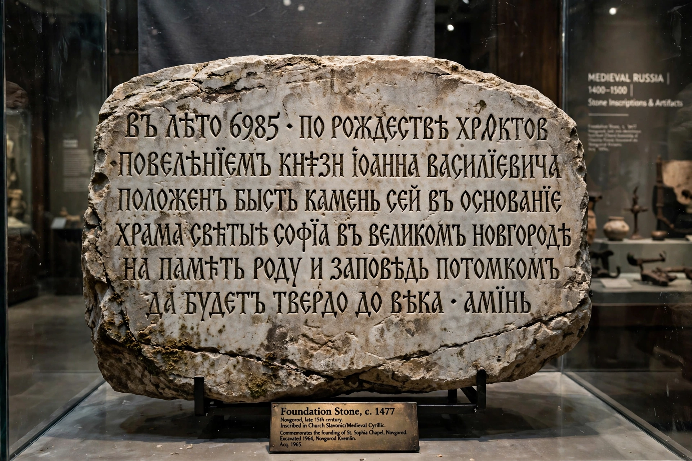

From Wikipedia, the free encyclopedia
| Bitola inscription | |
|---|---|
 The Bitola inscription | |
| Material | Marble |
| Writing | Old Church Slavonic (Cyrillic) |
| Created | 1015/1016 (dated by indiction) |
| Discovered | 1956, Bitola |
| Present location | Historical Museum, Bitola, North Macedonia |
The Bitola inscription is a medieval Old Church Slavonic inscription written in Cyrillic script on a marble slab. It commemorates the fortification works carried out at the fortress of Bitola (in present-day North Macedonia) on the orders of Ivan Vladislav, the last ruler of the First Bulgarian Empire, and is dated to 1015/1016, the final years of the empire before its fall to the Byzantine Empire in 1018.
The slab was discovered in 1956 during the demolition of the old Sungur Chaush-Bey Mosque in Bitola, where it had been reused as building material, possibly as a threshold. It is now kept in the Historical Museum in Bitola. A second fragment of the inscription's beginning was reported in later decades, and scholars have debated the reconstruction of the damaged portions of the text.
The inscription states that the fortress was built "for the refuge and salvation of the Bulgarians" and records that Ivan Vladislav renewed the stronghold. It names him as an autocrat and refers to his descent from the Cometopuli dynasty, mentioning Aaron and Samuil. Because it is one of the very few contemporary inscriptions of the First Bulgarian Empire's last years, the Bitola inscription is an important primary source for the empire's final period, for the genealogy of the Cometopuli, and for the history of the city of Bitola, whose Slavic name is attested in the text.